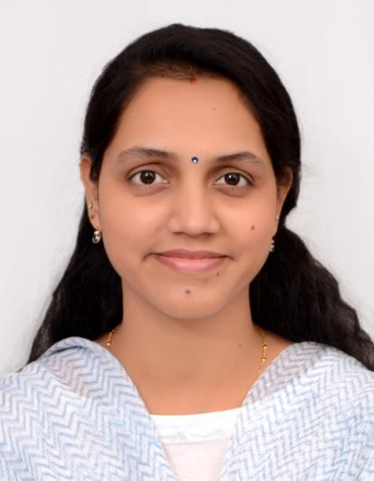

Mathematics and Artificial Intelligence for Theoretical Reasoning and Innovation
Our Research Meet the TeamTo develop reliable, interpretable AI methods that translate into real clinical impact, with a focus on accessible screening for under-served populations.
MAITRI Lab is a research group in the Department of Mathematics, MNIT Jaipur, building the mathematics behind AI: fractional calculus, optimisation and statistics, applied to large language models, medical imaging, silicosis detection and epidemic modelling. We collaborate with hospitals and clinicians to turn research into deployable tools.
Latest updates from the lab — milestones, deployments, awards and announcements.

Assistant Professor, Department of Mathematics, MNIT Jaipur
Fractional Calculus · Artificial Intelligence · Machine Learning · Deep Learning · Medical Image Processing · Computational Statistics · Mathematical Modelling
Tools built from our research and used in the real world.
Four application areas, one mathematical core: fractional calculus, optimisation and statistics for AI. Click an area to see our papers and the public datasets behind it.
Our most recent papers. Open the full list for every publication from Dr. Harjule's profile.
Innovations protected and moving toward deployment.